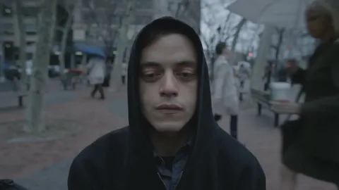

Информация об авторе
Hello friend
Карцев Всеволод Дмитриевич
ЭФБО-02-24
Обо мне: родился 25 января 2006 года. С 2023 года выступаю за команду Team Spirit. Чемпион мира по Counter-Strike 2, лучший игрок 2024 года. В 2024 году вошёл в число победителей ежегодного рейтинга российского Forbes «З0 до 30» в категории «Спорт и киберспорт».
Навык 1
Навык 2
Навык 3
Навык 4
Мой опыт работы:
Опыт 1
Работал фантазёром. Сочинял и праздновал.
Работал фантазёром. Сочинял и праздновал.
Опыт 2
Работал воровством. Воровал и продавал.
Работал воровством. Воровал и продавал.
Опыт 3
Работал рэпером. Читал и пел.
Работал рэпером. Читал и пел.